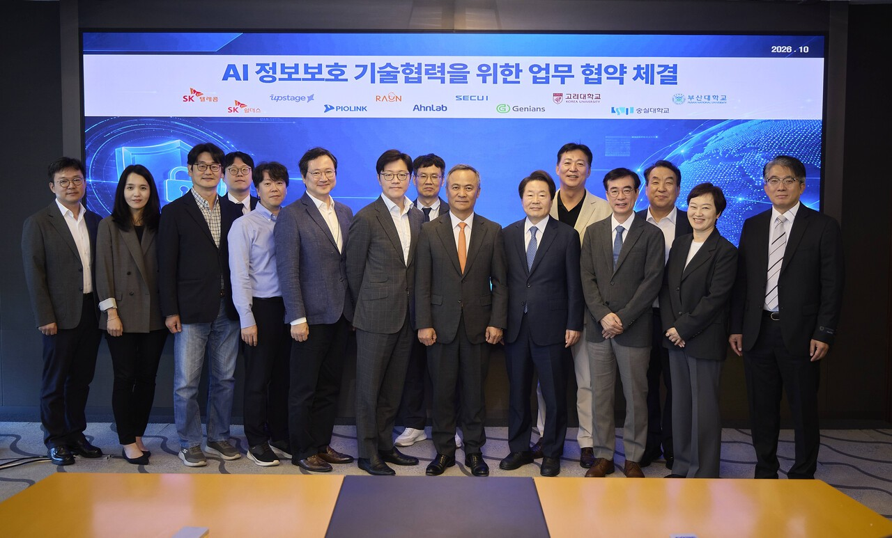
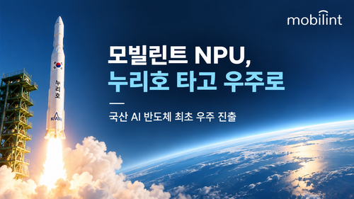
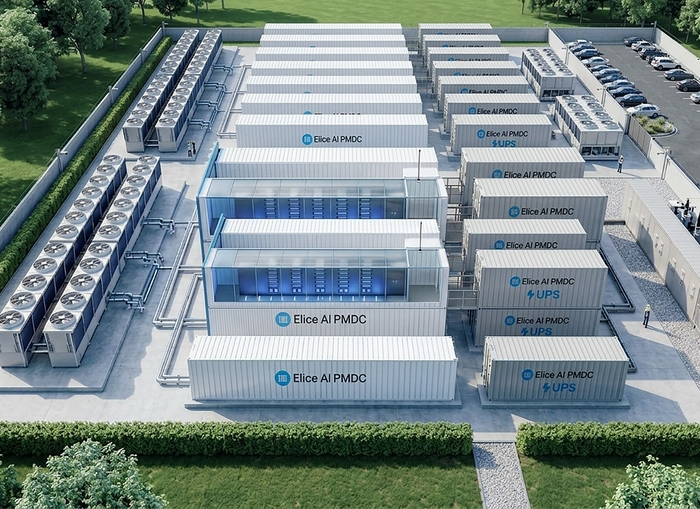
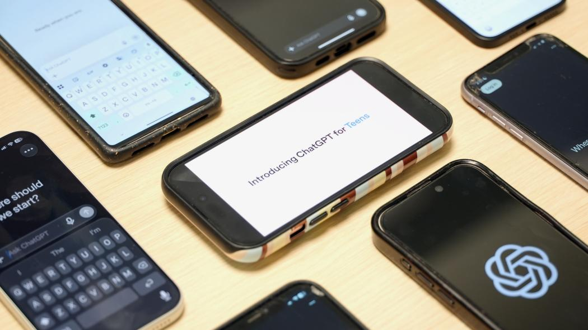
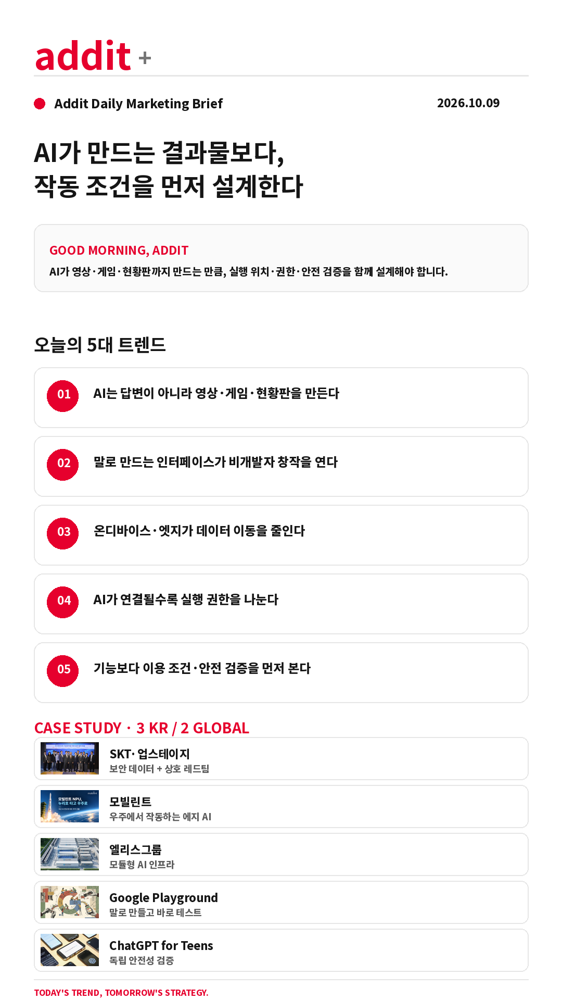

addit+
2026.10.09 Fri
ONLINE · SNS MARKETING BRIEFING
AI가 만드는 결과물보다,
작동 조건을 먼저 설계한다
AI가 답변을 넘어 영상·게임·현황판을 직접 만드는 만큼, 실행 위치·권한·안전 검증이 도입의 일부가 됩니다.
GOOD MORNING, ADDIT
오늘은 AI 기능의 화려함보다 실제 운영 조건을 보겠습니다. 무엇을 만들고, 어디에서 처리하며, 어떤 보호 장치가 검증됐는지까지 확인해야 오래 쓰는 도구가 됩니다.
오늘은 AI 기능의 화려함보다 실제 운영 조건을 보겠습니다. 무엇을 만들고, 어디에서 처리하며, 어떤 보호 장치가 검증됐는지까지 확인해야 오래 쓰는 도구가 됩니다.
TODAY'S 5 SIGNALS
AI를 ‘쓰는’ 다음에 설계할 다섯 가지 조건
말로 만드는 인터페이스가 비개발자 창작을 연다
온디바이스·엣지가 데이터 이동을 줄인다
AI가 연결될수록 실행 권한을 나눈다
기능보다 이용 조건·안전 검증을 먼저 본다
CASE STUDY · 3 KR / 2 GLOBAL
작동 조건을 바꾼 다섯 가지 실행 사례

KR · AI타임스SK텔레콤·업스테이지 — AI 사이버보안 협의체
SK텔레콤·업스테이지와 6개 보안기업, 3개 대학 등 11개 기관이 참여해 악성코드·취약점·관제 데이터를 학습하고 대학 검증과 상호 레드티밍을 진행합니다.
- 현장 보안 데이터를 모델 학습에 연결
- 두 모델이 서로 공격·평가하는 상호 레드티밍
AI타임스 원문 보기 →

KR · 전자신문모빌린트 — 누리호 탑재 에지 AI 반도체
레귤러스 기반 NPU 보드가 BEE-1012 위성에 탑재됐습니다. 위성 상태 분석과 단백질 결정 성장 관찰·이미지 분석을 현장에서 처리하는 방향입니다.
- 국산 NPU 보드 2종을 위성 시스템에 적용
- 궤도상 AI 기능 시험과 임무 데이터 처리 예정
전자신문 원문 보기 →

KR · 전자신문엘리스그룹 — 모듈형 AI 데이터센터 PMDC
서버·전력·냉각·네트워크를 사전 제작하고 직접수랭식·온수 냉각을 적용한 모듈형 AI 데이터센터입니다. ECI를 결합해 GPU 클러스터 운영까지 묶습니다.
- 부산 제조 산업단지 엣지 AI 데이터센터 등에 적용
- 국내 생산 연산 자원의 해외 공급도 추진
전자신문 원문 보기 →
 GLOBAL · The Decoder
GLOBAL · The DecoderGoogle Playground — 자연어 게임 제작
미국 성인에게 우선 공개된 브라우저 기반 플랫폼입니다. 규칙·물리·캐릭터·환경을 말로 바꾸고 바로 플레이하며, 완성 게임 공유와 공개 갤러리도 지원합니다.
- Gemini·Nano Banana·Lyria 기반 게임 생성
- Unity Spark 연계와 공개 게임 안전 검토 제시
The Decoder 원문 보기 →

GLOBAL · Common Sense MediaChatGPT for Teens — 안전성 독립 평가
Youth AI Safety Institute는 13~17세 계정으로 4,000건이 넘는 프롬프트를 전후 비교하고, 부모 알림·위기 대응·학습 보호 장치의 실패 사례를 제시했습니다.
- 일부 보호 기능은 작동했지만 핵심 안전 약속은 미달했다고 평가
- OpenAI는 테스트 시점과 방법론에 이견을 제기
Common Sense Media 원문 보기 →
PLATFORM WATCH
원고에서 확인한 다음 운영 변화
Claude Motion·Dashboards
설명 영상을 만드는 기능과 연결 데이터로 실시간 현황판을 만드는 기능이 시험 단계로 추가됐습니다.
The Decoder 원문 →Google AI Edge Foresight
맥에서 회의 음성과 파일을 기기 안에서 처리하는 실험용 메모 앱입니다.
The Verge 원문 →Meta Muse iPad 앱
이메일·문서·일정 화면과 Asana·Canva·Dropbox·Figma 등 업무 도구 연결을 확장했습니다.
AI타임스 원문 →Anthropic 이용 정책
반복적인 모델 학대, 선거 개입·감시·무기용 소프트웨어 등 고위험 악용을 함께 다룹니다.
TechCrunch 원문 →USA Today의 OpenAI 제소
기사 학습과 콘텐츠 권리의 경계를 둘러싼 법적 쟁점이 이어지고 있습니다.
The Verge 원문 →
ADDIT INSIGHT
AI의 생산성을 키우는 첫 설계는 기능 추가가 아니라 책임 경계와 실행 위치를 정하는 것입니다.
ACTION CHECK
- 이 기능은 답변·영상·게임·현황판 중 무엇을 만드는가?
- 입력 데이터는 어디에서 처리되고 외부로 이동하는가?
- 읽기·쓰기·전송 권한이 분리되어 있는가?
- 사용 조건·지역·요금·시험 단계가 명확한가?
- 안전 기능의 실패 조건과 독립 검증 결과를 확인했는가?